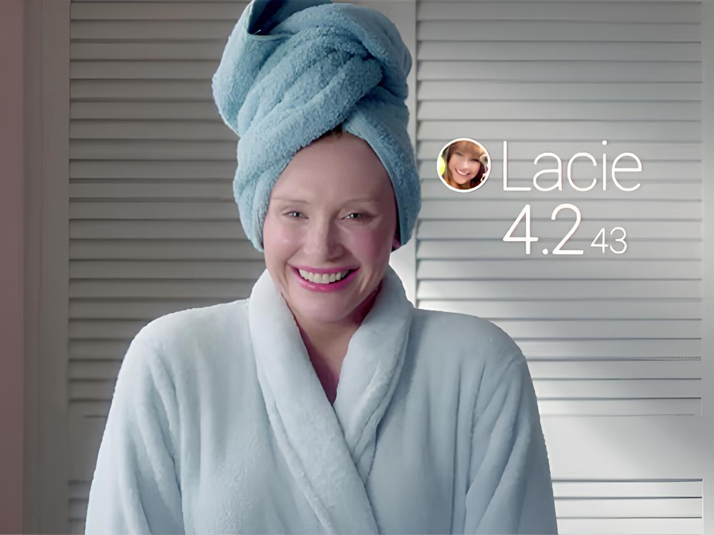

Do que se trata?
Lacie Pound vive em uma realidade onde pessoas são rotuladas com estrelas. Lacie é obcecada pela sua imagem, todas as suas ações e decisões são por pura estética e busca de validação social.

Como funciona o sistema de notas?
O sistema de notas funciona conforme o comportamento das pessoas e suas relações sociais. As pessoas buscam ter ações boas e que beneficiam as outras, a fim de aumentarem suas notas através do celular. Essas notas variam de 1 a 5 e são visíveis por todos.
Um comportamento pode mudar de acordo com a nota?
Os comportamentos são fatores determinantes para a nota de cada pessoa. Como visto no episódio, pessoas que tinham ações não muito desejáveis tinham sua nota perdidas do "aplicativo", Lacie perdeu sua nota por se alterar dentro do aeroporto. Com isso, esse sistema de notas exige uma perfeição vinda das pessoas, no qual tudo o que é feito em público é ensaiado.
O sistema gera comportamentos falsos ou artificiais?
Na busca incessante de uma pontuação alta no ranking, máscaras são vestidas, e as pessoas se moldam para preencher padrões impostos.

Essa realidade possui relação com o mundo atual e com as redes sociais?
Com o avanço tecnológico e o advento das redes sociais, essa distopia se aproxima cada vez mais da nossa realidade.